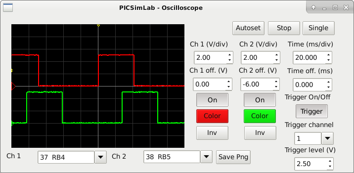
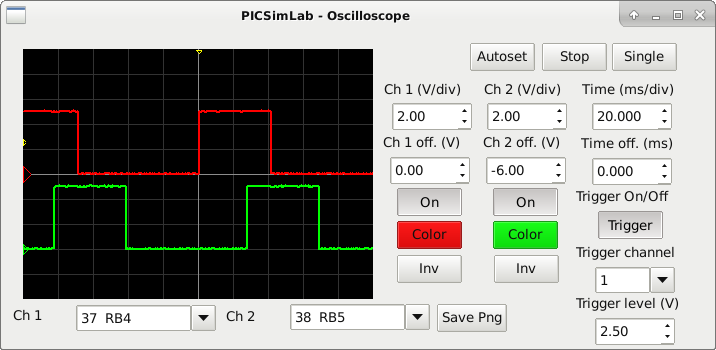

Chapter 8
Oscilloscope
The PICSimLab has a basic two-channel oscilloscope that can be used to view the signal on any pin of the microcontroller. The oscilloscope can be accessed through the “Modules->Oscilloscope” menu.

The PICSimLab has a basic two-channel oscilloscope that can be used to view the signal on any pin of the microcontroller. The oscilloscope can be accessed through the “Modules->Oscilloscope” menu.
